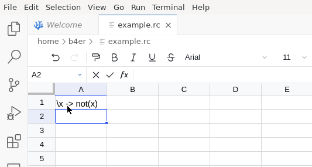
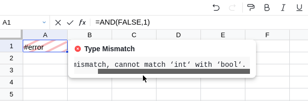

Introduction
Recalc is a work-in-progress spreadsheet engine built in Haskell. It's a playground for experimenting with functional programming languages embedded in spreadsheets.
It includes a frontend as VS Code Web Extension built using the Univer Sheet API:

The recalculation engine is kept generic and is compatible with any implementation of the following interface:
(see Recalc.Engine)
For now1 the Languages are restricted to those where types and values
coincide (i.e. dependently typed languages).
The type Fetch mentioned above is more generic and custom errors can be
introduced there:

The Web Extension includes a dependently typed functional programming language (see here) which is actively developed (expect things to break).